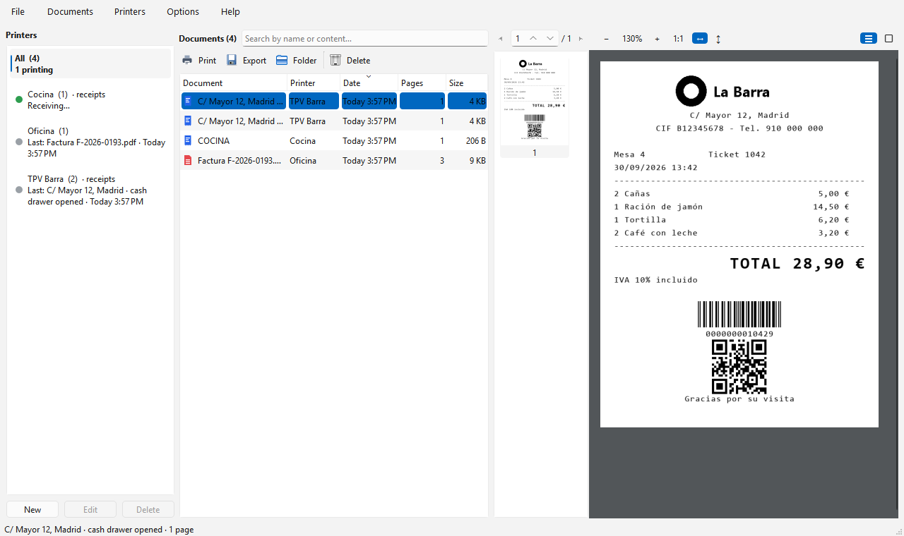

Everything you print, saved and searchable
Free virtual printers for Windows that keep a visual history of every PDF document and POS receipt (ESC/POS) — over USB or over the network.
Free · Windows 10/11 · Installs without administrator rights · Version 1.0.1 · 29.7 MB

What it does
Print as usual from any program. Virtual Printer captures each job, keeps the original and shows it in a searchable history.
Several virtual printers
Create as many as you need (“Invoices”, “Bar”, “Kitchen”…) and see what each one is printing almost in real time.
POS receipts (ESC/POS)
Receipts are drawn exactly as a thermal printer would: text styles, logos, barcodes and QR codes, 80 or 58 mm.
USB or network
As a Windows printer for programs that print to USB printers, or as a network printer on port 9100 for POS systems that print by IP.
Search inside documents
Find any document or receipt by its name or by its content, and filter by printer.
Viewer, export and reprint
All pages with zoom and thumbnails. Export the original PDF, or resend a receipt byte for byte to a real receipt printer.
Quiet in the tray
Starts with Windows, lives in the system tray and notifies you of each new document. Available in English and Spanish.
Start in three steps
Nothing else to install.
- Download the installer and run it. It needs no administrator rights and adds Virtual Printer to the Start menu.
- Click New and choose the type: documents (PDF), receipts on a Windows printer or receipts over the network.
- Print from your program choosing the new printer. The job appears in the history within seconds.
Windows asks for administrator permission only to create or rename Windows printers. Network printers do not need it.
Help translate it
Virtual Printer is available in English and Spanish. Translations are plain .po files that anyone can edit with the free Poedit tool — no programming needed.
How it works
Open the template in Poedit, create your language and translate. Copy the file to %USERPROFILE%\.virtual_printer\locales, restart the app and pick your language in Options › Language to see it live. Then tell us through the contact form.
Free, and it will stay free
Virtual Printer is free, with no ads and no paid version. If it saves you time, you can support its development with a coffee.
Contact
Questions, problems, ideas or a translation you would like to send: write to us and we will reply by email.
We only use your details to reply to you. See the privacy policy.
Frequently asked questions
Is it really free?
Yes. You can use it for free, at home or at work, on as many computers as you like. There are no ads and no paid version; donations are voluntary.
Windows SmartScreen warns me when I open the installer
The installer is not digitally signed yet. Click “More info” › “Run anyway”.
Which POS programs does it work with?
With any program that prints ESC/POS receipts to a Windows printer (choose “Generic / Text Only”) or to a network printer by IP (port 9100). If the program prints with Windows graphics, use your receipt printer’s driver (e.g. POS80) instead.
Where are my documents stored?
Only on your computer, in %USERPROFILE%\.virtual_printer. The app does not send your documents or any usage data anywhere.
What do I need?
Windows 10 or 11 (64-bit). The “Microsoft Print to PDF” feature for document printers, which Windows includes by default.
How do I uninstall it?
Delete the virtual printers from the app first if you no longer want them, then uninstall Virtual Printer from Windows Settings › Apps. Your captured documents are kept in your user folder until you delete them.